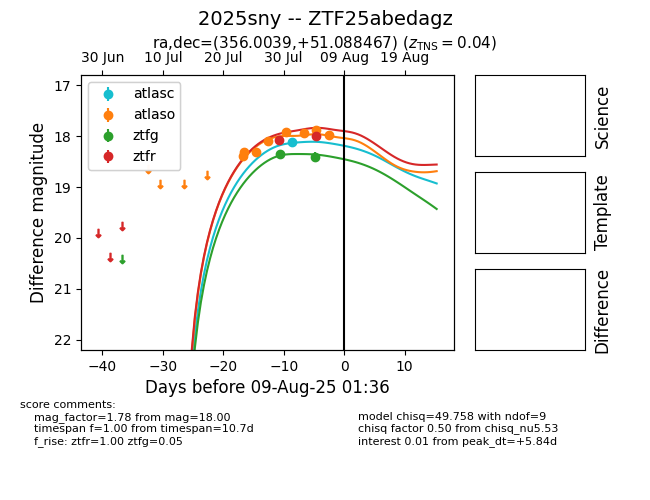

Target 2025sny at 2025-08-09 06:37, see:
FINK: fink-portal.org/2025sny
Lasair: lasair-ztf.lsst.ac.uk/objects/2025sny
ALeRCE: alerce.online/object/2025sny
TNS: wis-tns.org/object/2025sny
YSE: ziggy.ucolick.org/yse/transient_detail/2025sny
alt names
ZTF25abedagz (ztf,fink)
2025sny (tns,yse)
coordinates:
equatorial (ra, dec) = (356.0039,+51.08847)
galactic (l, b) = (112.2614,-10.38108)
photometry
last atlasc=18.11, atlaso=17.97, ztfg=18.54, ztfr=17.95
1 atlasc, 8 atlaso, 3 ztfg, 3 ztfr detections
